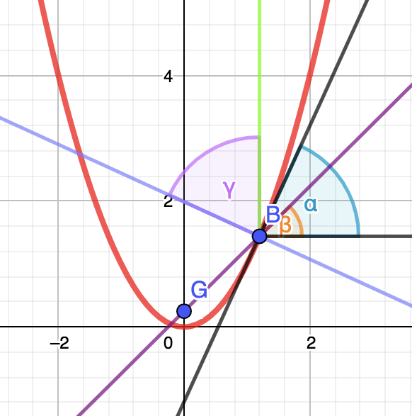
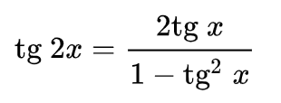

To explain a reflection property of a parabola I will consider the parabola This is a general case and I will use it to make the explanations easier.
Let's take function f(x) = ax2.
Imagine a parallel ray reflecting in the parabola. Let's name the intersection point as P=(xo, yo).
Let's construct a line tangent to the parabola in point P. It has a formula of:
y: atx + bt
at is equal to the value of f'(x0)
f'(x0) = 2 * a * x0
As we know from physics lesson The law of reflection states that angle of incidence equals the angle of reflection.
Let's look at this general case drawing.

Let's find a formula for the reflection line (the one going through G and B).
yf = afx + bf
yf = tg(β)x + bf .
Firstly notice that: γ + γ + 90° - β = 180°
That is: β = 2γ - 90°
Also: γ = α because γ + 90° == α + 90°
tg(β) = tg(2γ - 90°) = (some calculations) = - 1 / tg(2α)

tg(β) = tg2(α) - 1 / (2 * tg(α))
tg(α) is easy to compute. It equals to f'(x0) = 2ax0
tg(β) = (4a2x02 - 1) / (4ax0)
For the computation of yf we still lack bf.
we know that the B point lays on the intersection of parabola and the yb
(4a2x02 - 1) / (4ax0) * x0 + bf = a x02
(some calculations)
bf = - 1 / (4a)
y(0) = af * 0 + bf = bf = -0.25a
It is clearly visible that no matter what value of x0 we choose
(in other words: no matter where the ray is gonna "hit" the parabola) the reflection line will always
go through point (0, -0.25/a).
This proves the focal property of parabola
Although I have explained how it works only in a general case, one can imagine easily that we can obtain any parabola by translating this function by a vector (as we know we can write a formula for any parabola by translating a function f(x) = ax2 within a vector (vx, vy). Thus, it means that the focal property stays the same, just the focus point will be moved by this vector as well.
In this example the parabole equation is y = x2/200.
"a" coeffficient equals to 1/200, so the focus point is:
[0, -1/(4 * 1/200)] = [0, 50]